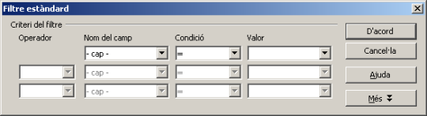
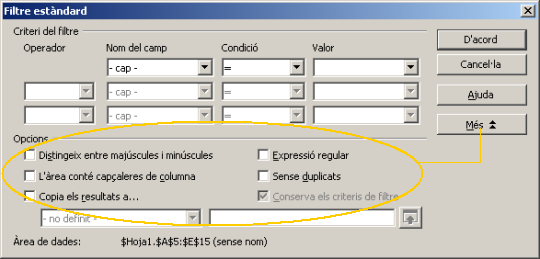

UF4. Fulls de càlcul
G rapida - filtreest
Filtre estàndard
Especifica les condicions lògiques per filtrar les dades d'una àrea de dades, permetent fins a tres criteris de filtrat com a màxim.
Activar el filtre estàndard
- Situeu-vos, tot i que no és imprescindible, en qualsevol cel·la de la columna de l'àrea de dades que voldreu que formi part de la primera condició del filtre estàndard o bé seleccioneu la part de l'àrea de dades que voldreu filtrar
- Demaneu l'opció de menú Dades | Filtre | Filtre estàndard

Criteris de filtrat
Operador
- Per al segon i tercer criteri de filtre, es poden escollir els operadors lògics I o O
Nom del camp
- Especifica els noms de camp de la taula actual per definir-los en l'argument. Si en la selecció de l'àrea de dades no hi són els noms de la columna, aquests seran Columna A, Columna B, etc.
Condició
- Especifica els operadors de comparació mitjançant els quals es poden vincular les entrades dels camps Nom del camp i Valor: = (igual), < (menor que o anterior), > (major que o posterior), < = (menor o igual que), >= (major o igual que), <> (diferent),
Valor
- Permet especificar el valor per filtrar el camp. Aquest pot ser -no buit-, -buit- o qualsevol dels valors que apareguin en el camp combinat Valor. També es pot escriure el valor de filtrat.
Botó Més
- Mostra opcions de filtrat addicionals
